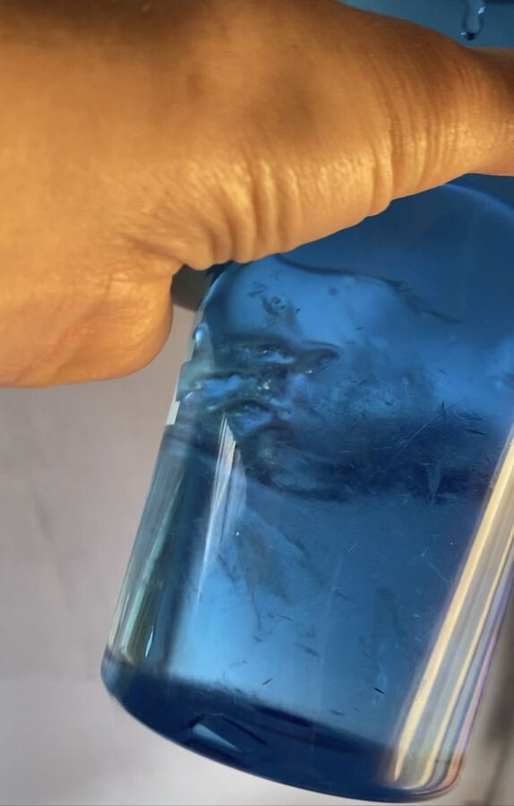
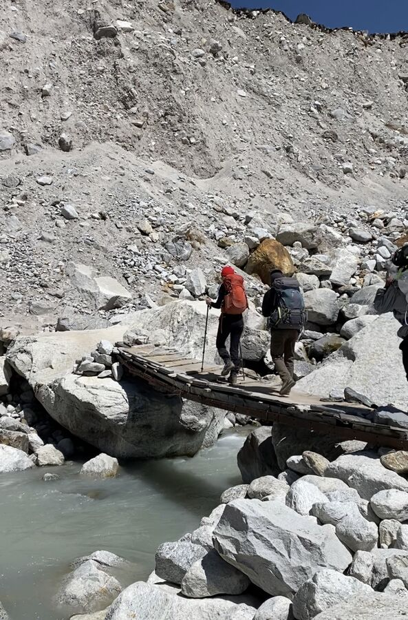
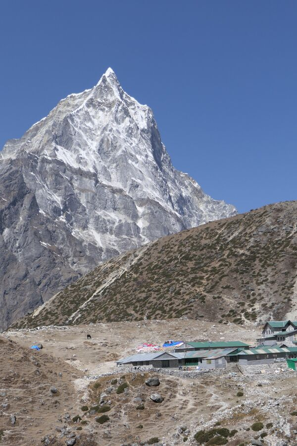
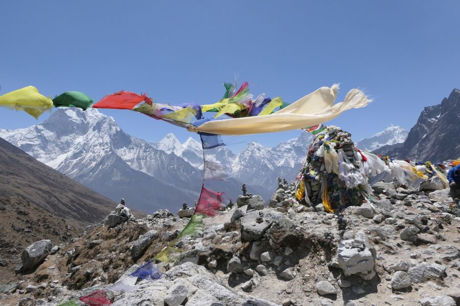
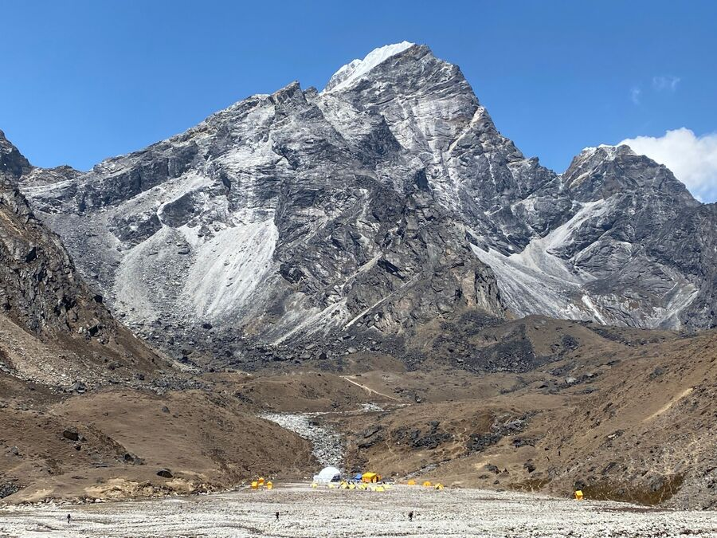
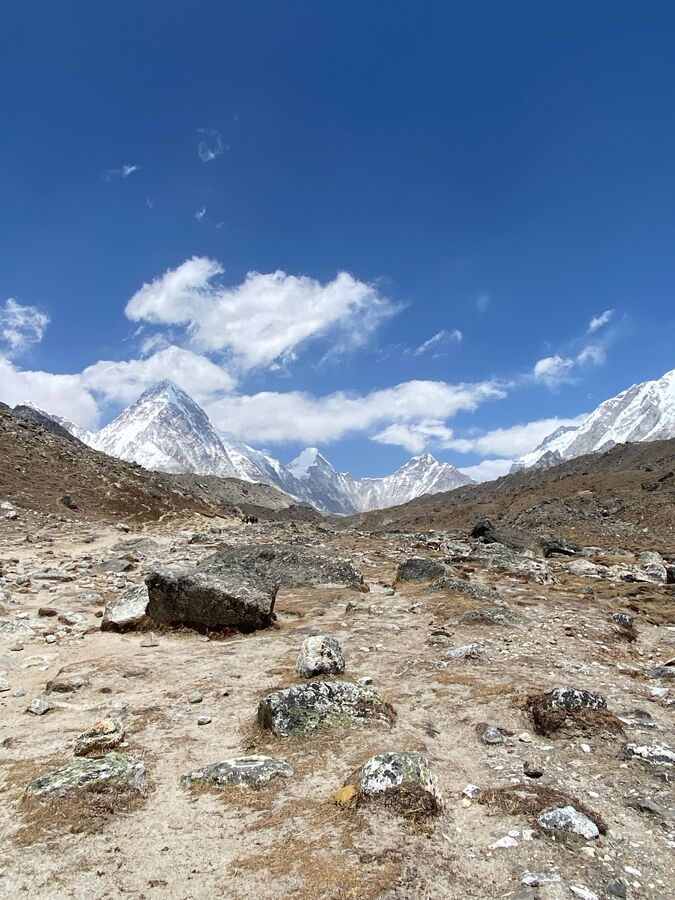
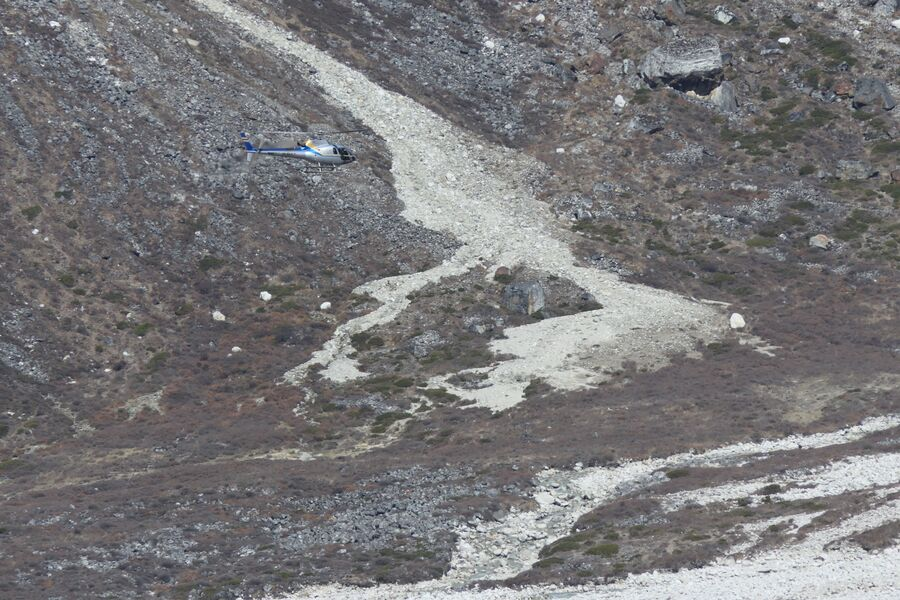

Dingboche'deki ikinci gece yine çok, çok soğuktu. Bu sefer ikimiz de daha iyi uyuduk, tam anlamıyla iyi olmasa da. Her halükârda Yeşim'in matarasındaki su bu sabah donmuştu. Burada – şu an aslında yılın en sıcak mevsimi – su boruları güvenlik için kapatılıyor, yoksa borular patlıyor. Ancak güneş çevreyi biraz ısıttıktan sonra akan su oluyor. Bu yüzden bugünkü kısa yüz yıkama mataradan yapıldı.

Kahvaltıdan sonra tam sekize doğru Lobuche'ye doğru yola çıktık. Burası, aynı adlı dağın eteğinde bir otel ya da lodge topluluğu. Önce kısa, hafif bir çıkış geldi, sonra hep hafifçe yükselen, çok iyi yürünen bir yol Nangkartshang'ın sırtında kuzeybatıya ilerledi.
Taboche'yi (6.495 m) solumuzda bıraktık ve yaklaşık 4,5 km sonra Cholatse'nin (6.440 m) eteğinde Khumbu Buzulu'ndan beslenen küçük bir dereyi geçtik. Burada dünyanın en yüksek buzulunu da ilk kez görebildik. Bir dağ gibi yükseliyor; bu kaya, moloz ve kum yığınının altında Everest ve Lhotse'nin buzunun bulunduğunu bilmeseniz, onu normal bir dağ sanırsınız. Kristal berraklığındaki buzul deresi beyaz kaya ve taşlardan bir yatakta akıyor. Bunların üzerinden geçip son bölümü de tahta bir köprüden geçmek gerekiyor.

Derenin arkasında Thukla'daki Yak Lodge'da kısa bir mola verdik, çay içtik ve yanımızda getirdiğimiz enerji barlarını yedik. Öğle yemeğinden vazgeçtik, saat de daha 10'du. Bu mola yerinde at da kiralanabiliyor ve sonradan duyacağımız gibi Brezilyalı yol arkadaşımız gerçekten de bitkinlikten bir tane kiralamış (ücreti: 100 USD).

Moladan sonra maalesef yolun zor kısmı geldi. Yaklaşık 1 saat boyunca yokuş yukarı gittik. Adım adım mücadele ederek tırmandık. Zirve noktası, 4.842 m'de hayatını kaybeden Şerpalar ve dağcılar için yapılmış Chukpi Lhara anıt alanıydı. Burada her ölen için taşlardan bir dikili taş yapılabiliyor ya da bir kayaya yazı yazılabiliyor. Bir kısmı plaketli, bir kısmı fotoğraflı sayısız böyle anıt var.
En ünlülerinden biri, Everest'e 11. tırmanışında hayatını kaybeden Babu Chiri Sherpa'ya (1965-2001) ait. İki rekor da kırmıştı: Everest'e sadece 17 saatin biraz altında çıkmış ve zirvede oksijensiz 21 saat kalmıştı.

Bu arada anıt alanının olduğu yerde, dönüşte kullanacağımız Cho La Geçidi yolu da ayrılıyor. Yolumuz şimdi bizi buzulun ucunun sağından dolaştırdı; böylece batı yan morenin üzerinde yürüdük. Lobuche sağımızda yükseliyordu. Az sonra, Lobuche'ye tırmanacak gibi görünen bir seferin kamp kurduğu Lobuche ana kampının önünden geçtik.

Fotoğraf: Lobuche ana kampı
Lobuche'deki konaklama yerimize giderken bir sonraki etkileyici zirveleri görebildik: Pumori (7.161 m), Lingtren (6.714 m), Khumbutse (6.636 m) ve Nuptse (7.861 m). Artık yedi binlik dağların erişim mesafesindeydik.

Bu arada çok kalabalıktı. Bir yandan bizim gibi „EBC“ye ulaşmak ya da geçitlerden veya küçük zirvelerden birine tırmanmak isteyen çok sayıda trekkingci var. Öte yandan şu anda örneğin Lobuche'de veya Everest'te profesyonel seferler düzenleniyor. Ve her katılımcı da bizimle aynı aklimatizasyondan geçmek ve yolu yürümek zorunda. Böylece şu anda Khumbu bölgesinden, görünüşe göre profesyonel dağcılardan, her yaştan az çok sportif amatörlerden ve böyle bir tura çıkmaları pek tavsiye edilmeyecek insanlardan oluşan bir akış geçiyor. Ve tüm tur boyunca başımızın üzerinden çoğunlukla seferlere malzeme taşıyan ya da pes eden trekkingcileri Lukla'ya geri götüren çok sayıda helikopter uçtu.

Son bölüm aslında artık o kadar zor değildi, yine de bir türlü bitmek bilmedi. Nihayet Lobuche'ye vardığımızda bitap düşmüştük. Lodge'umuza ulaştık ama odalarımızın boş olmadığını öğrendik. Bir grup Lobuche'de bir gece daha kalmaya karar vermişti. Belki bir hastalık vakası vardı. Her neyse, orada bir öğle yemeği yedik ve sonra National Park Hotel'e taşındık.
Odamız yine 2 kerevetli bir tahta bölme. Üzerlerinde 2 şilte ve birer yastık ile yorgan var. Tuvalet (1 alafranga, 1 alaturka) lodge'un başka bir bölümünde. Yıkanma imkânı avludaki musluklu bir su tankından ibaret. Yarın muhtemelen çok mütevazı bir yüz yıkama olacak.
Bu arada son bölümü atla geçen Brezilyalı da bizim otelde. Ama durumu o kadar kötü ki helikopterle tahliye edilmek istiyor. Bugün Lukla'daki kötü hava koşulları yüzünden bu artık mümkün olmadı. İster istemez geceyi buz gibi odasında geçirmek zorunda.
Öğleden sonra biraz ısıtan güneşte oturduk, sonra saat 15:30'da, nihayet soba yakıldıktan sonra misafir salonuna geçtik. Akşam yemeği yine kızarmış pilav ve yumurtalı kızarmış patatesti. Seçenek her yerde 2-3 çeşitte 5-6 yemekle sınırlı. Ama şikâyet etmek istemiyoruz. Besleyici ve güzel. Ve burada, yukarıda böyle bir şeyin olmasına bile sevinmek gerek. Çünkü her şey bir hayvanın ya da taşıyıcının sırtında getirilmek zorunda. Helikopter böyle şeyleri yukarı taşımaz. Bu çok pahalı olurdu.
Akşam yemeğinden sonra rehberimiz Naran ile yarınki Ana Kamp'a giden „kraliyet etabı“nı konuştuk. Uzun ve zor olacak, bu yüzden daha erken kalkmamız gerekiyor. Dolayısıyla saat 20 civarında soğuk uyku tulumlarımıza süzüldük. İyi geceler!
—-
Bu arada rehberimiz Naran'ı Instagram'da takip edebilirsiniz: